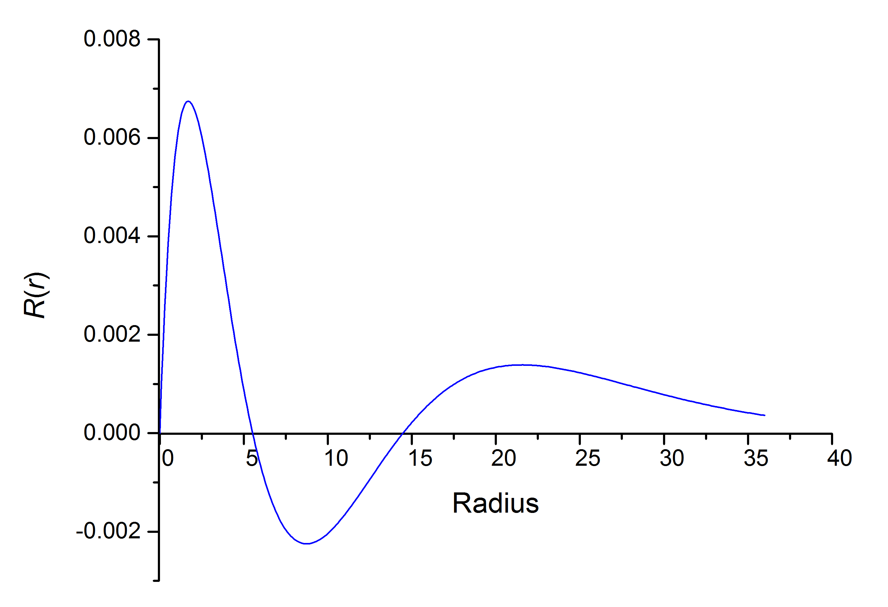
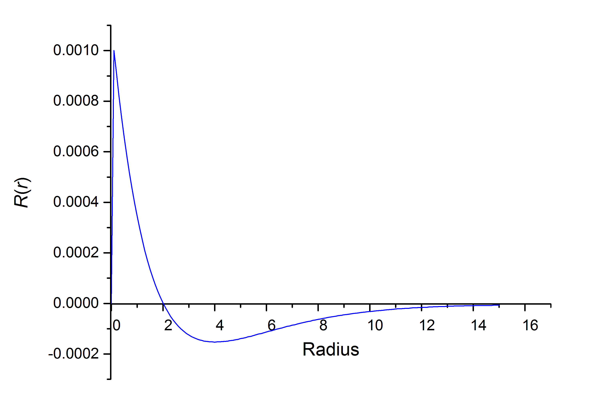

在此之前，我已经写了一段数值求解一维量子谐振子波函数的Python代码。建议先从该帖子开始阅读（Numerov方法数值求解一维量子谐振子波函数），涉及到的Numerov方法的原理就不再重复了。
首先写出径向部分的Schroedinger方程：
由于Numerov方法处理的是形如$\psi^{\prime\prime}=G(r)\psi(r)$的微分方程，但上式中存在$R^\prime$项，所以需要消掉。
令$F(r)=rR(r)$，所以：
代入到径向Schroedinger方程中：
递推关系已得到，现在需要讨论边值条件。由于$r\rightarrow 0$时，$R(r)\sim r^l,\ l=0,1,2,\ldots,n$，因此$F=rR$在$r=0$处必为0。
但是这里有一个小问题，$r=0$时，前式中$G(r)$会遇到除以0的情况。为了避免这一情况，我们以一个非常小的$r$作为近似零点（比如令$r=10^{-15}$）。（但是又会带来另一个问题，对于$l=0$的径向波函数，$R(r)|_{r=0}$本应为一非零正值。但我们用该方法产生的结果是在（近似）零点处，波函数为0。然而目前暂时不知道如何处理）
在使用程序实现之前，还是先完成公式的非量纲化。（具体步骤不写了）
得到约化的Schroedinger方程和递推项分别为：
现在就可以使用程序实现了（和之前那个区别不大）。
写的Python代码如下：
1 | #!/usr/bin/env python3 |
运行该程序需要我们输入角量子数、间隔长度、间隔数和能量。
例如，我们想绘制4p轨道径向部分波函数的图像。首先估计能量：$E\text{r}=-\frac{1}{2\times 4^2}=-0.03125$。然后由$-0.03125=-\frac{1}{r_\text{r}}$得到$r=32$。稍取更远的点$r=36$来验证波函数在此处是否趋于0。设间隔长度为0.1，间隔数自然为360。得到结果如下1
2
3
4
5
6
7
8
9
10
11
12
13
14
15Er=-0.03125
Nodes=2
0.000000 0.000000
0.100000 0.001000
0.200000 0.001811
0.300000 0.002567
0.400000 0.003247
0.500000 0.003852
0.600000 0.004385
0.700000 0.004853
0.800000 0.005258
0.900000 0.005605
1.000000 0.005899
1.100000 0.006143
...
用以上数据绘图，可看到与解析解得到的结果非常接近。（注：程序输出的数值与波函数的表达式算出的结果并不一定相同，这是因为没有对数值计算得到的结果进行归一化，将其乘以适当的系数后与理论值基本一致。）

之前提到了，对于s轨道，该程序有一些缺陷，由下图可以看出：

当$r=0$时，$R(r)$本不为0，所以上图在零点附近的表现不太正确（后面是比较吻合的）。